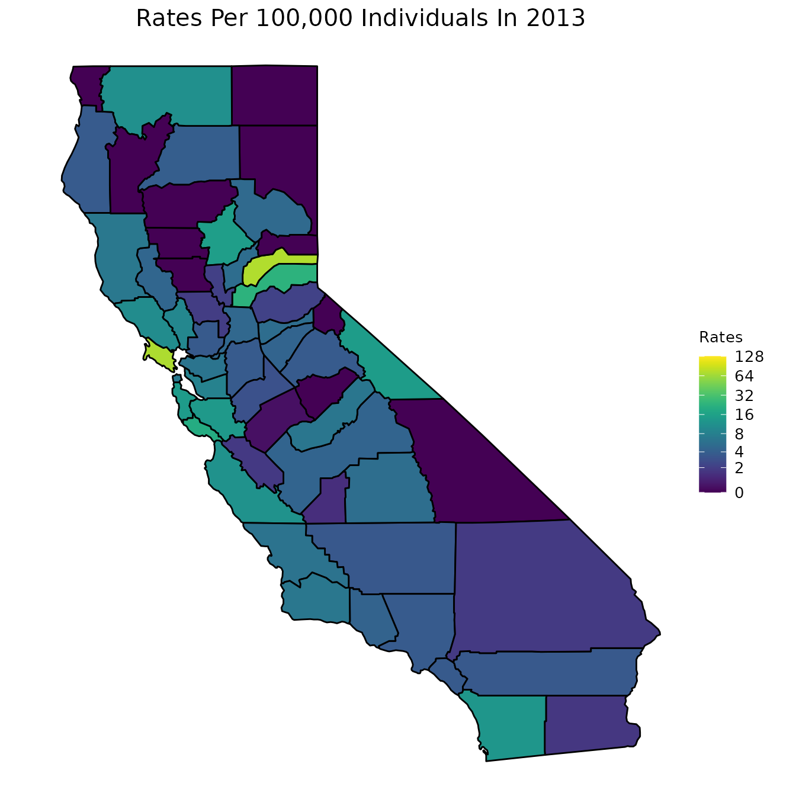

The first step in any analysis we want to perform is to first read in our datasets. For this analysis, we will utilize two datasets, both found in the Data/ folder of this project: county_vaccination, and pertussis. Both these datasets are documented in the associated help files, but we summarize here for convenience. Before continuing with this vignette, we strongly encourage readers to examine the documentation for each dataset, if they have not already.
-
county_vaccinationis a dataset containing information about vaccination rates for each CA county for the years of 2008-2017. -
pertussisis a dataset containing all pertussis cases, arranged by county, from the years of 2008-2017 in the state of California.
We first print out the variable names so that readers are aware of the variables in each dataset.
# We print the names of each dataset names(county_vaccination) #> [1] "Jurisdiction" "total_Enrollment" "total_Up_to_Date" #> [4] "total_Conditional" "total_PME" "total_PBE" #> [7] "total_DTP" "total_Polio" "total_MMR" #> [10] "total_HepB" "total_Var" "percent_Up_to_Date" #> [13] "percent_Conditional" "percent_PME" "percent_PBE" #> [16] "percent_DTP" "percent_Polio" "percent_MMR" #> [19] "percent_HepB" "percent_Var" "Year" names(pertussis) #> [1] "Jurisdiction" "Year" "Cases" "Rates"
Data Visualization
One particularly useful way to understand our data is to visualize it. To do this, we will create various plots of our variables.
Incidence
We first start with our pertussis dataset. One way to visualize our data is to create boxplots of the cases and rates every year.
# Remove missing data pertussis_omit <- na.omit(pertussis) # Cases ggplot(pertussis_omit, aes(x = Year, y = Cases, fill = as.numeric(Year))) + geom_boxplot(outlier.shape = NA) + geom_jitter(size = 0.5, color = "gray40") + viridis::scale_fill_viridis() + theme(legend.position = "none", plot.title = element_text(hjust = 0.5, size = 15), axis.title = element_text(size = 10)) + labs(title = "Boxplot of Cases By Year", x = "Year", y = "Cases")
# Rates ggplot(pertussis_omit, aes(x = Year, y = Rates, fill = as.numeric(Year))) + geom_boxplot(outlier.shape = NA) + geom_jitter(size = 0.4, color = "gray40") + viridis::scale_fill_viridis() + theme(legend.position = "none", plot.title = element_text(hjust = 0.5, size = 15), axis.title = element_text(size = 10)) + labs(title = "Boxplot of Rates By Year", x = "Year", y = "Rates")
# Code below is a method to remove outliers if deemed needed # ylim_cases = grDevices::boxplot.stats(pertussis_omit$Rates)$stats[c(1, 5)] # ylim_cases = quantile(pertussis_omit$Rates, c(0, 1)) # include_cases + coord_cartesian(ylim = ylim_cases)
As is clear by the above graphs, in some counties the rate and cases are very high and thus the data is hard to interpret. In order to combat this, instead of plotting the cases and rates for every county, we could simply find the average number each year. This approach is shown below,
# Create dataframe pertussis_means <- pertussis_omit %>% dplyr::group_by(Year) %>% dplyr::summarize( avg_cases = mean(Cases), avg_rates = mean(Rates), .groups = "drop_last") # Plot average for cases and rates ggplot(pertussis_means, aes(x = Year, y = avg_cases, fill = avg_cases)) + geom_col() + viridis::scale_fill_viridis() + theme(legend.position = "none", plot.title = element_text(hjust = 0.5, size = 15), axis.title = element_text(size = 10)) + labs(title = "Histogram of Average Cases By Year", x = "Year", y = "Average Cases")

ggplot(pertussis_means, aes(x = Year, y = avg_rates, fill = avg_rates)) + geom_col() + viridis::scale_fill_viridis() + theme(legend.position = "none", plot.title = element_text(hjust = 0.5, size = 15), axis.title = element_text(size = 10)) + labs(title = "Histogram of Average Rates By Year", x = "Year", y = "Average Rates")
To further understand what our data looks like for any particular year, we will construct a map of the rates of infection for a typical year: 2013. Since the data from 2013 spans a large range, we will transform the shading of the map by log base 2. This will make it easier to interpret. Note that when we transform the data, we do not actually change the values of our data. The data remains the same, but we change the way data points are colored.
# Select year 2013 pertussiss_to_map <- pertussis %>% dplyr::filter(Year == "2013") # Map with all data from 2013 map_plot(pertussiss_to_map, "Rates", breaks = c(0, 2, 4, 8, 16, 32, 64, 128), title = "Rates Per 100,000 Individuals In 2013", fill = "Rates", trans = scales::pseudo_log_trans(base = 2))

We below present a way to create a gif from the data for all years. This is a superior approach to only plotting one year as was done in the previous code chunk. Note that in order to run the below code chunk, some packages may first need to be installed.
# Create dataset pertussiss_animated <- pertussis %>% na.omit() pertussiss_animated$Year <- as.numeric(as.character(pertussiss_animated$Year)) # Animate data animated <- map_plot(pertussiss_animated, "Rates", breaks = c(0, 2, 4, 8, 16, 32, 64, 128), title = "Rates Per 100,000 Individuals", fill = "Rates", trans = scales::pseudo_log_trans(base = 2)) + gganimate::transition_time(as.integer(Year)) + labs(title = "Rates Per 100,000 Individuals in {frame_time}") gganimate::animate(animated, fps = fps) #> Warning: No renderer available. Please install the gifski, av, or magick package #> to create animated output
Vaccination Rates
We now move on to our county_vaccination dataset. We first start by creating maps of CA counties and shading the counties according to a specific measurement. The following set of graphs shows the percent of students with DTP vaccinations, the percent of students that are up to date on their vaccinations, the percent of students that have a PME, and the percent of students that have a PBE.
One option for visualizing these variables is to look at a specific year. Below, we look at the year 2013.
# Graphs are for the year 2013 vac_to_map <- dplyr::filter(county_vaccination, Year == "2013") %>% dplyr::select(Jurisdiction, percent_DTP, percent_Up_to_Date, percent_PME, percent_PBE) %>% dplyr::mutate_at(dplyr::vars(dplyr::contains("percent_")), ~.*100) map_plot(vac_to_map, "percent_Up_to_Date", title = "Up to Date")
map_plot(vac_to_map, "percent_PME", title = "PME")

map_plot(vac_to_map, "percent_PBE", title = "PBE")

map_plot(vac_to_map, "percent_DTP", title = "DTP Vaccinations")
As we did with our pertussis dataset, however, we can also animate maps of CA.
# Create dataset vac_animated <- county_vaccination %>% dplyr::select(Jurisdiction, Year, percent_DTP, percent_Up_to_Date, percent_PME, percent_PBE) %>% dplyr::mutate_at(dplyr::vars(dplyr::contains("percent_")), ~.*100) vac_animated$Year <- as.numeric(as.character(vac_animated$Year)) # Animate up to data data animated <- map_plot(vac_animated, "percent_Up_to_Date") + gganimate::transition_time(as.integer(Year)) + labs(title = "Up to Date in {frame_time}") gganimate::animate(animated, fps = fps) #> Warning: No renderer available. Please install the gifski, av, or magick package #> to create animated output
# Animate PME data animated <- map_plot(vac_animated, "percent_PME") + gganimate::transition_time(as.integer(Year)) + labs(title = "PME in {frame_time}") gganimate::animate(animated, fps = fps) #> Warning: No renderer available. Please install the gifski, av, or magick package #> to create animated output
# Animate PBE data animated <- map_plot(vac_animated, "percent_PBE") + gganimate::transition_time(as.integer(Year)) + labs(title = "PBE in {frame_time}") gganimate::animate(animated, fps = fps) #> Warning: No renderer available. Please install the gifski, av, or magick package #> to create animated output
# Animate DTP data animated <- map_plot(vac_animated, "percent_DTP") + gganimate::transition_time(as.integer(Year)) + labs(title = "DTP in {frame_time}") gganimate::animate(animated, fps = fps) #> Warning: No renderer available. Please install the gifski, av, or magick package #> to create animated output
Modeling
The next stage in our analysis is to model the data. More specifically, we seek to evaluate the relationship between vaccination rates and disease incidence. In order to model our data, however, we must first set up the data. In the following code chunk, we combine our two datasets.
# Define a not in operator `%notin%` <- Negate(`%in%`) # Combine the data sets and remove the total county model_data <- dplyr::full_join(county_vaccination, pertussis, by = c("Jurisdiction", "Year")) %>% dplyr::filter(Jurisdiction != "totals")
Recall that in our data there are both rates of disease and cases of disease. Likewise, there is vaccination data that represents totals, and other vaccination data that represents percents. In modeling our data, we can look at combinations of these different types of data. We can either look at the total number for vaccination rates and the total number of cases or we can look at the percent of vaccination rates and the rates of disease.
We first look at the number of total cases and the total vaccination rates.
# Isolate variables, scale the independent variables, and remove missing data scaled_total_data <- model_data %>% dplyr::select(-one_of(c("Jurisdiction", "Year", "Rates"))) %>% dplyr::select(-contains("percent_")) %>% dplyr::mutate_at(dplyr::vars(-Cases), scale) %>% as.data.frame() %>% na.omit() # Run a linear regression several times and take the average R2 results_cases <- list() for (i in 1:1000){ t_sample = caTools::sample.split(scaled_total_data$Cases, SplitRatio = 0.7) t_train = subset(scaled_total_data, t_sample == TRUE) t_test = subset(scaled_total_data, t_sample == FALSE) lm <- stats::lm(Cases ~., data = t_train) # print(summary(lm)) predict_lm <- lm %>% stats::predict(t_test) results_cases <- c(results_cases, round(caret::R2(predict_lm, t_test$Cases), 4)) } print(paste("Average Test R2 Linear:", mean(unlist(results_cases)))) #> [1] "Average Test R2 Linear: 0.4202957"
We next look at the rates of cases and the percent of vaccination rates.
# Isolate variables and remove missing data scaled_percent_data <- model_data %>% dplyr::select(-one_of(c("Jurisdiction", "Year", "Cases"))) %>% dplyr::select(-contains("total_")) %>% # dplyr::mutate_if(is.numeric, scale) %>% as.data.frame() %>% na.omit() # scaled_percent_data$Rates <- scaled_percent_data$Rates/1000 # Run a linear regression several times and take the average R2 results_percent <- list() for (i in 1:1000){ p_sample = caTools::sample.split(scaled_percent_data$Rates, SplitRatio = 0.7) p_train = subset(scaled_percent_data, p_sample == TRUE) p_test = subset(scaled_percent_data, p_sample == FALSE) lm <- stats::lm(Rates ~., data = p_train) # summary(lm) predict_lm <- lm %>% stats::predict(p_test) results_percent <- c(results_percent, round(caret::R2(predict_lm, p_test$Rates), 4)) } print(paste("Average Test R2 Linear:", mean(unlist(results_percent)))) #> [1] "Average Test R2 Linear: 0.0190044"
Correlation
After running the above models, it can be seen that the R2 value is not particularly high. There may be many reasons for this, but one might be that the data is highly correlated. Below, we therefore plot a correlation plot of the independent variables.
# Set up data corr_data <- model_data %>% dplyr::select(-"Jurisdiction") # Create correlation matrix corr_mat <- Hmisc::rcorr(as.matrix(scaled_total_data), type = "spearman") M <- corr_mat$r P_mat <- corr_mat$P # Plot the correlation values corrplot::corrplot(M, method = "color", col = RColorBrewer::brewer.pal(n=8, name="PuBu"), addCoef.col = "black", tl.col = "black", tl.srt = 50,tl.cex = 0.60, p.mat = P_mat, sig.level = 0.05, pch.cex = 5, mar=c(0,0,2,0), number.cex = 1)